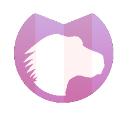

over 
This is the default operation, which will be used if no operation or an unsupported operation is specified.
in
in attribute that overlap the destination graphic defined in the in2 attribute, replace the destination graphic.out 
in attribute that fall outside the destination graphic defined in the in2 attribute, are displayed.atop
in attribute, which overlap the destination graphic defined in the in2 attribute, replace the destination graphic. The parts of the destination graphic that do not overlap with the source graphic stay untouched.xor
in attribute and the destination graphic defined in the in2 attribute are combined.lighter 
in attribute and the destination graphic defined in the in2 attribute is displayed.arithmetic
The arithmetic operation is useful for combining the output from the {{SVGElement("feDiffuseLighting")}} and {{SVGElement("feSpecularLighting")}} filters with texture data. If the arithmetic operation is chosen, each result pixel is computed using the following formula:
result = k1*i1*i2 + k2*i1 + k3*i2 + k4
where:
i1andi2indicate the corresponding pixel channel values of the input image, which map to {{SVGAttr("in")}} and {{SVGAttr("in2")}} respectively- {{SVGAttr("k1")}}, {{SVGAttr("k2")}}, {{SVGAttr("k3")}}, and {{SVGAttr("k4")}} indicate the values of the attributes with the same name.